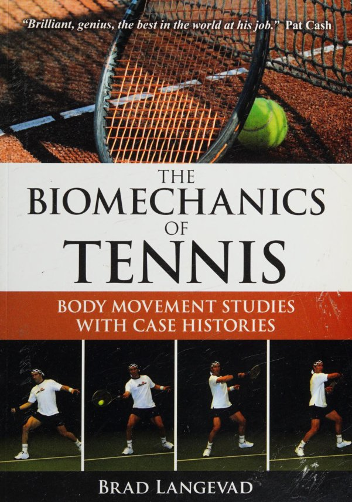
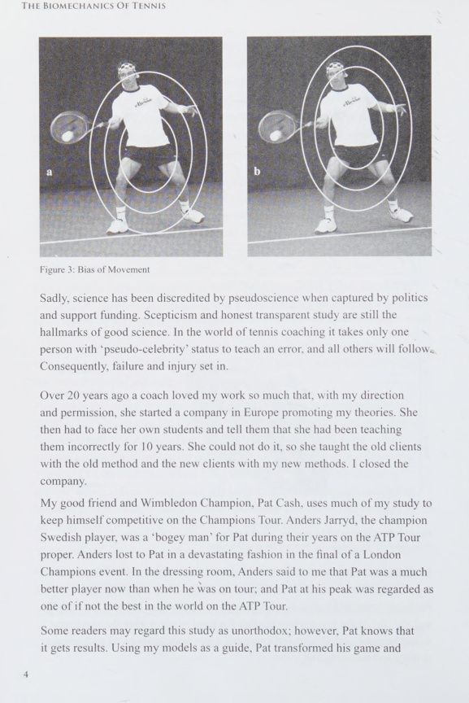
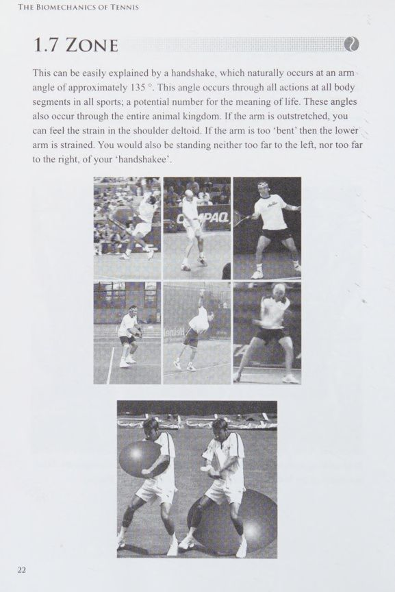
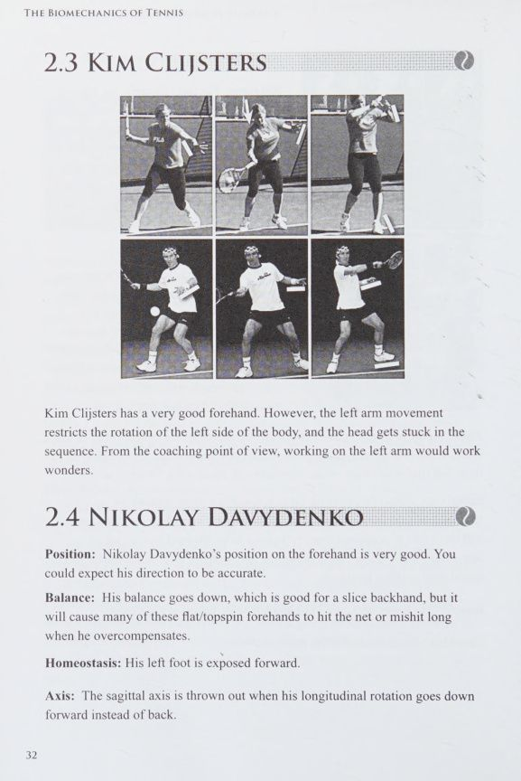
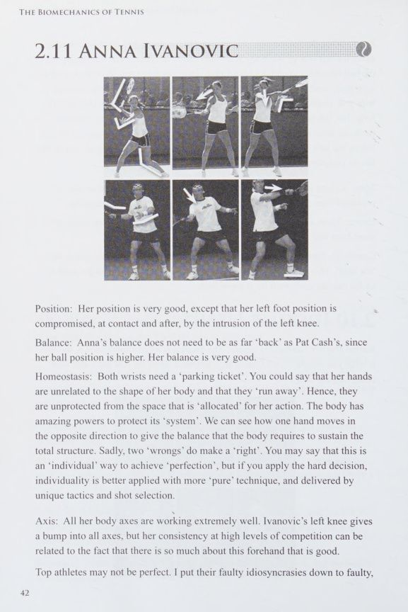
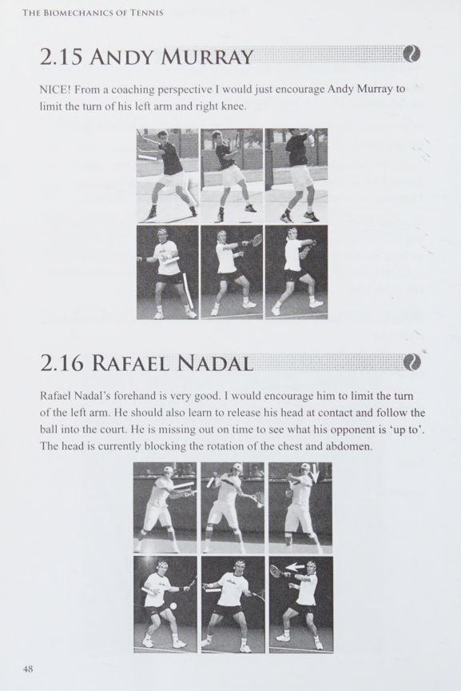
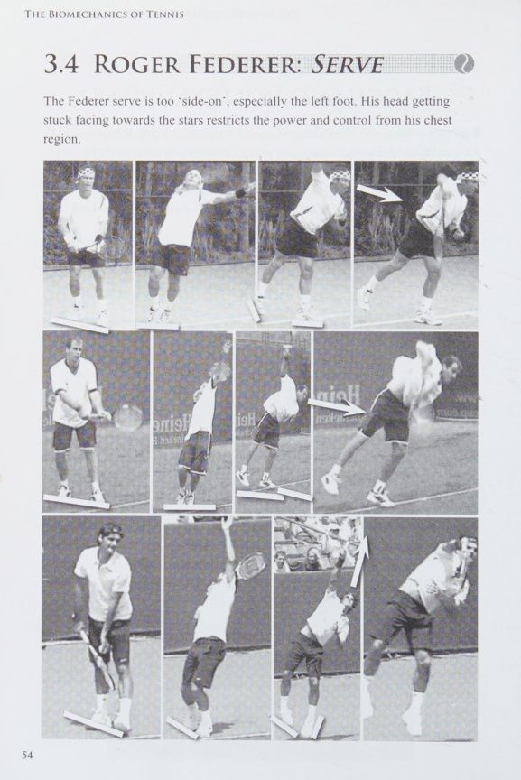
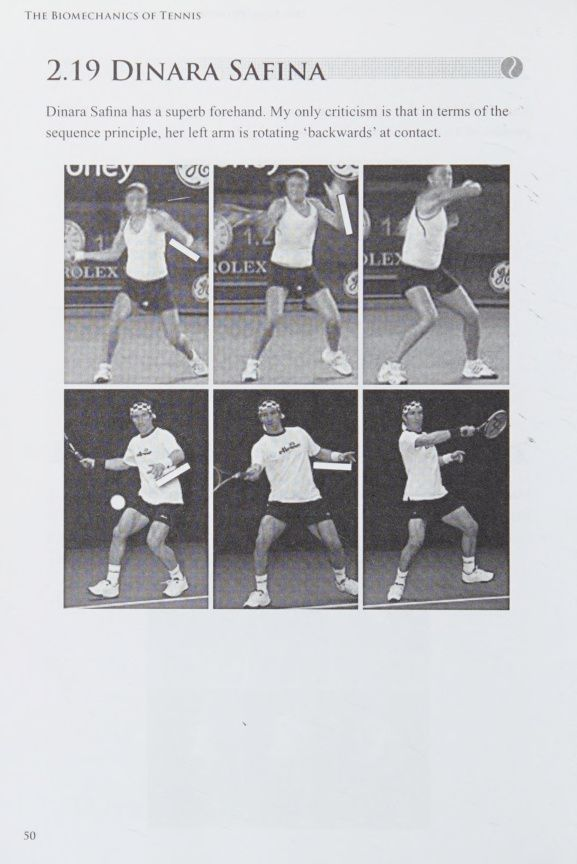

Công trình nghiên cứu cơ sinh học và phân tích động lực học đỉnh cao của chuyên gia Brad Langevad
Lời Tựa Của Pat Cash & Lời Mở Đầu
Introduction by Wimbledon Champion Pat Cash & Author's Preface
Pat Cash: Quyết Định Sáng Suốt Nhất Trong Sự Nghiệp Đỉnh Cao
Tôi bắt đầu làm việc với Brad Langevad cách đây hơn 20 năm. Thành thật mà nói, đó là quyết định đúng đắn nhất mà tôi từng đưa ra trong cuộc đời quần vợt của mình. Nhờ Brad, tôi đã thấu hiểu những nguyên lý vận động mà trước đây tôi chưa từng nghe thấy ở bất kỳ huấn luyện viên nào. Ông đã giúp tôi sửa chữa triệt để hai điểm yếu cố hữu lớn nhất trong lối chơi của mình: Cú thuận tay và cú giao bóng. Tôi chỉ ước rằng mình đã được tiếp cận những kiến thức khoa học này sớm hơn trong sự nghiệp thi đấu chuyên nghiệp tại ATP Tour. Những hiểu biết cơ sinh học của Brad không chỉ giúp tôi hồi phục thần kỳ sau những chấn thương tưởng chừng phải giải nghệ, mà còn gia tăng đáng kể sức mạnh và tính ổn định phi thường cho từng đường bóng. Điều đó đã giúp tôi duy trì phong độ đỉnh cao để tiếp tục tranh tài sòng phẳng tại Champions Tour trước những đối thủ ngày càng trẻ hơn. Trong công tác huấn luyện của chính mình hiện nay, tôi luôn áp dụng triệt để các nguyên lý của Brad. Hãy lắng nghe và học hỏi, bởi đây chính là tương lai của bộ môn quần vợt.
Cơ Sinh Học Đích Thực: Khoa Học Vận Động Tự Nhiên
Cơ sinh học (Biomechanics) không phải là một ngành khoa học biến con người thành những người máy cứng nhắc. Cơ sinh học là phương pháp nghiên cứu mang tính quy luật tự nhiên, khảo sát các chuyển động cơ thể trong không gian để tinh chỉnh chúng hướng tới hiệu suất vận động cao nhất và triệt tiêu nguy cơ chấn thương. Một nghịch lý đau xót trong thế giới quần vợt hiện nay là: Không được huấn luyện đôi khi còn tốt hơn rất nhiều so với việc bị huấn luyện bởi một huấn luyện viên tồi. Những chuyển động xuất chúng nhất của các nhà vô địch thế giới thường là những chuyển động được phát triển hết sức tự nhiên theo bản năng cơ thể, trước khi bị bóp méo bởi những giáo điều sai lệch của những người thầy thiếu hiểu biết khoa học.
Chương 1: Các Nguyên Lý Cơ Sinh Học Nền Tảng
Chapter 1: Fundamental Biomechanical Principles & Bias of Movement
Thiên Kiến Chuyển Động (Bias of Movement) Và Rào Cản Thói Quen
Mỗi vận động viên khi bước vào tập luyện đều mang trong mình một "Thiên kiến chuyển động" (Bias of Movement). Đây là xu hướng vô thức lặp lại những chuyển động quen thuộc của hệ thần kinh cơ, ngay cả khi chuyển động đó hoàn toàn phản tác dụng về mặt cơ học. Khoa học chân chính đòi hỏi sự hoài nghi lành mạnh và tính minh bạch tuyệt đối. Trong giới huấn luyện, chỉ cần một nhân vật có danh tiếng phong trào truyền dạy một lỗi kỹ thuật sai lệch, hàng ngàn người sẽ mù quáng làm theo. Hậu quả trực tiếp là sự bế tắc về phong độ và những chấn thương mãn tính xuất hiện ở khớp vai, khuỷu tay và cột sống thắt lưng.

Sơ đồ 1: Thiên Kiến Chuyển Động (Bias of Movement) — Phân tích sự xung đột giữa phản xạ tự nhiên của cơ thể và các thói quen vận động sai lệch do huấn luyện cơ học cứng nhắc.
Chuỗi động học liên hoàn Học Liên Hoàn (Kinetic Chain)
Lực đánh bóng trong quần vợt không bao giờ được sinh ra đơn độc từ cơ bắp cánh tay. Sức mạnh bùng nổ là kết quả của một Chuỗi động học liên hoàn Học (Kinetic Chain) liên tục, bắt đầu từ lực phản hồi của mặt đất qua bàn chân, truyền lên khớp gối, xoay quanh trục hông, vặn xoắn thân trên và vai, rồi phóng thích qua cánh tay đòn và cổ tay vào mặt vợt. Nếu một mắt xích trong chuỗi liên hoàn này bị nghẽn (ví dụ chân không chùng hoặc hông bị khóa cứng), vận động viên sẽ buộc phải dùng lực cơ bắp cục bộ của cánh tay để bù đắp, dẫn đến việc mất kiểm soát quỹ đạo bóng và gây quá tải nghiêm trọng cho khớp vai và khuỷu tay.
Chương 2: Cơ Sinh Học Cú Thuận Tay - Mô Hình Nền Tảng
Chapter 2: Forehand Biomechanics — Pat Cash and Andre Agassi Studies
So Sánh Cơ Học Cú Thuận Tay Của Pat Cash Và Andre Agassi
Qua hàng ngàn giờ phân tích hình ảnh chuyển động siêu chậm (high-speed camera), mô hình thuận tay của Andre Agassi và Pat Cash cung cấp những bài học vô giá về sự truyền lực tối ưu: Ở giai đoạn chuẩn bị, Agassi duy trì một cấu trúc cánh tay đòn vô cùng ổn định với cổ tay ngửa tự nhiên (wrist extension), tạo điều kiện cho đầu vợt rơi xuống đáy quỹ đạo một cách hoàn toàn tự do dưới tác động của trọng lực. Pha tiếp xúc bóng của cả hai huyền thoại đều diễn ra khi mặt phẳng ngực đã mở hướng về phía mục tiêu, nhưng đầu và mắt vẫn giữ cố định tuyệt đối tại Điểm tiếp xúc bóng. Việc không vội vàng quay đầu nhìn theo bóng là yếu tố sinh tử giúp bảo toàn sự thăng bằng của trục cột sống.

Sơ đồ 2: Cơ Sinh Học Thuận Tay Nền Tảng — Mô hình phân tích chuyển động góc xoay của khớp vai, vị trí cánh tay đòn và điểm tiếp xúc bóng phía trước thân người.
Chương 3: Hồ Sơ Cơ Sinh Học Cú Thuận Tay Của Các Nhà Vô Địch
Chapter 3: Forehand Case Studies of Champions — Federer, Nadal, and Djokovic
Roger Federer: Cánh Tay Đòn Thẳng Và Trục Đầu Cổ Bất Biến
Cú thuận tay của Roger Federer được xem là một trong những kiệt tác cơ sinh học vĩ đại nhất trong lịch sử thể thao. Khác với đại đa số tay vợt hiện đại sử dụng cánh tay gập khuỷu (Double-bend), Federer thi đấu với cấu trúc cánh tay đòn gần như thẳng tuyệt đối (Straight-arm forehand) tại thời điểm tiếp xúc bóng. Cánh tay thẳng tạo ra bán kính đòn bẩy dài nhất có thể, tối đa hóa vận tốc góc ở đầu vợt. Tuy nhiên, điều kỳ diệu nhất trong cơ học của Federer nằm ở trục đầu cổ: Trong khi toàn bộ cơ thể xoay với tốc độ kinh hoàng, đầu của anh vẫn giữ nguyên một góc cố định, ánh mắt dán chặt vào điểm bóng chạm mặt dây trong suốt vài phần nghìn giây sau khi bóng đã rời đi. Sự ổn định thị giác tuyệt đối này ngăn ngừa hoàn toàn hiện tượng lệch trục quán tính của thân trên.

Sơ đồ 3: Cú Thuận Tay Roger Federer — Cấu trúc cánh tay đòn thẳng hoàn hảo, vị trí đầu cổ khóa cố định tại điểm tiếp xúc và sự giải phóng năng lượng mượt mà qua vai.
Rafael Nadal: Động Tác Quất Vợt Ngược (Buggy Whip) Và Độ Xoáy Hủy Diệt
Cú thuận tay của Rafael Nadal đại diện cho một trường phái cơ sinh học đối nghịch nhưng đạt hiệu suất khủng khiếp. Khi bị dồn ép ra góc sân hoặc cần tạo ra góc đánh siêu hẹp, Nadal không vung vợt qua vai đối diện theo lối truyền thống mà giật ngược vợt lên trên đầu (Reverse follow-through hay Buggy Whip). Động tác này đẩy tốc độ góc theo phương thẳng đứng lên tới mức cực hạn, tạo ra vòng quay của quả bóng vượt mốc 3.500 đến 4.000 vòng/phút (RPM). Tuy nhiên, cơ sinh học của Brad Langevad cảnh báo rằng: Kỹ thuật quất vợt ngược đòi hỏi sức mạnh phi thường của cơ lưng xô và cơ nhị đầu cánh tay. Người chơi phong trào nếu sao chép động tác này một cách máy móc mà không có nền tảng thể lực tương xứng sẽ rất dễ gặp phải chấn thương rách gân chóp xoay khớp vai.

Sơ đồ 4: Cú Thuận Tay Rafael Nadal — Cơ chế quất vợt ngược qua đầu (Buggy Whip), độ xoáy cuộn topspin cực đại và tải trọng cơ học lên khớp vai.
Novak Djokovic: Tính Đàn Hồi Của Khung Chậu Và Bộ Chân Mở
Novak Djokovic là hình mẫu tối thượng về khả năng chuyển đổi lực trong tư thế chân mở hoàn toàn (Open Stance). Nhờ độ dẻo dai phi thường của các nhóm cơ khép háng và khớp hông, Djokovic có thể trượt dài trên mặt sân cứng mà vẫn duy trì được góc nghiêng lý tưởng của xương chậu. Cú thuận tay của anh hấp thụ toàn bộ động lượng từ cú đánh uy lực của đối phương, biến nó thành lực đàn hồi tích lũy ở vùng cơ lõi bụng lưng rồi phóng thích trở lại thành một đường phản công chéo sân với độ chính xác đến từng milimet.
Chương 4: Cơ Sinh Học Cú Giao Bóng Tốc Độ Cao
Chapter 4: High-Velocity Service Biomechanics — Federer, Roddick, and Williams
Roger Federer: Sự Thanh Thoát Và Khả Năng Ngụy Trang Tuyệt Đối
Cú giao bóng của Roger Federer không phải là cú giao bóng nhanh nhất thế giới về mặt vận tốc đo bằng máy đo radar, nhưng nó là một trong những quả giao bóng khó đỡ nhất lịch sử. Nghiên cứu của Brad Langevad chỉ ra rằng: Federer duy trì một điểm tung bóng duy nhất cho cả ba biến thể giao bóng phẳng, slice và kick. Chuyển động của Federer vận hành với sự thả lỏng thần kỳ của cơ bắp. Cánh tay đòn của anh chuyển động như một ngọn roi mềm mại: Từ tư thế cúp chiến lợi phẩm hoàn hảo, đầu vợt rơi tự do xuống sâu phía sau lưng rồi vút lên cao tiếp xúc bóng ở góc vươn thẳng nhất. Cơ chế xoay cẳng tay (internal shoulder rotation & pronation) diễn ra tự nhiên mà không hề có bất kỳ sự gồng cứng cơ học nào.

Sơ đồ 5: Cú Giao Bóng Roger Federer — Phân tích sự cân bằng trọng tâm, góc nghiêng vai hoàn hảo và cơ chế ngụy trang điểm rơi bóng độc nhất vô nhị.
Andy Roddick: Động Tác Thu Gọn Đà Và Sức Bùng Nổ Cơ Bắp
Ngược lại với sự uyển chuyển của Federer, Andy Roddick là biểu tượng của sức mạnh bùng nổ cơ khí. Roddick loại bỏ hoàn toàn giai đoạn đưa vợt dài xuống dưới chân bằng một động tác thu gọn đà vung (Abbreviated backswing): Vợt được đưa thẳng lên tư thế Trophy Pose ngay khi bóng rời tay tung. Để tạo ra những quả giao bóng vượt mốc 240 km/h, Roddick chùng sâu hai đầu gối tạo thành góc nén lò xo cực đại từ mặt đất. Khi bật nhảy lên không trung, lưng của anh ưỡn cong tạo thành một cánh cung tích trữ năng lượng khổng lồ. Tuy nhiên, Langevad chỉ ra rằng: Lối giao bóng này tạo ra một áp lực nén khủng khiếp lên các đĩa đệm cột sống thắt lưng L4-L5, đòi hỏi chế độ tập luyện bảo vệ cơ lưng đặc biệt nghiêm ngặt.

Sơ đồ 6: Cú Giao Bóng Andy Roddick — Phân tích góc nén của đầu gối, pha nạp lực lò xo của cột sống và lực quất cẳng tay tạo vận tốc kỷ lục.
Chương 5: Cơ Sinh Học Cú Trái Tay & Cú Volley
Chapter 5: Backhand and Volley Biomechanics — Gasquet, Henin, and Net Play
Richard Gasquet: Biên Độ Vung Vợt Ngoạn Mục Của Cú Trái Một Tay
Cú trái tay một tay của Richard Gasquet là một kỳ quan về biên độ chuyển động. Nhờ khớp vai có độ linh hoạt đặc biệt, Gasquet đưa vợt ra sau lưng sâu hơn bất kỳ tay vợt nào khác trên thế giới. Khi tiếp xúc bóng, cánh tay của anh mở rộng tạo thành một đòn bẩy vĩ đại, kết thúc bằng một cú bung tay qua vai với biên độ vòng cung khổng lồ. Quá trình này tạo ra độ xoáy topspin cực kỳ hiểm hóc, biến một cú đánh phòng thủ thành một đòn dứt điểm uy lực xuyên thủng hàng phòng ngự đối phương.

Sơ đồ 7: Cú Trái Tay Richard Gasquet — Phân tích góc xoay vai cực đại, độ rơi đầu vợt và pha bung cánh tay đòn tạo xoáy topspin uy lực.
Chương 6: Mô Hình Chuyển Động & Phòng Ngừa Chấn Thương
Chapter 6: Movement Models and Preventing Biomechanical Injuries
Bảo Vệ Chóp Xoay Khớp Vai Và Cột Sống Thắt Lưng
Chấn thương trong quần vợt không phải là một rủi ro ngẫu nhiên mà là kết quả tất yếu của các chuyển động sai lệch về mặt cơ học được lặp đi lặp lại hàng vạn lần: Bảo Vệ Khớp Vai: Khớp vai là khớp có biên độ vận động lớn nhất nhưng cũng kém vững chắc nhất trên cơ thể. Lỗi kỹ thuật nguy hiểm nhất là việc cố gắng tạo lực giao bóng hoặc thuận tay bằng cách gồng cứng cơ vai mà không xoay thân người. Để bảo vệ gân cơ trên gai (Supraspinatus tendon), vận động viên phải luôn khởi động kỹ chuỗi cơ xoay trong/xoay ngoài và đảm bảo rằng góc nâng của cánh tay luôn nằm trong mặt phẳng xương bả vai (Scapular plane). Giải Tỏa Áp Lực Cột Sống: Chuyển động xoay vặn thân người khi tiếp xúc bóng phải được bắt đầu từ trục xoay của hai khớp háng chứ không phải từ sự vặn xoắn cục bộ của cột sống thắt lưng. Khi háng mở tự do, lực xoay sẽ phân bổ đều lên toàn bộ cơ thể, ngăn ngừa hiện tượng thoái hóa đĩa đệm và rách bao xơ thắt lưng.
Nguy Hại Của Việc Bẻ Cổ Tay Đột Ngột
Nhiều huấn luyện viên phong trào thường dạy học viên "quất mạnh cổ tay" khi đánh bóng thuận tay để tạo xoáy. Đây là một quan niệm sai lầm chết người về mặt giải phẫu học. Cổ tay của con người không được thiết kế để chịu tải trọng va đập lớn ở tư thế gập duỗi tự do. Trong các cú đánh của Federer hay Agassi, cổ tay được giữ ở trạng thái ngửa vững chãi (Wrist extension) và chuyển động quất bóng thực chất là kết quả của sự xoay cẳng tay quanh trục quay sấp (Pronation) kết hợp với quán tính tự nhiên của đầu vợt. Việc cố tình Động tác sấp cổ tay / xoay trong cẳng tay chủ động sẽ nhanh chóng dẫn đến viêm bao gân và rách sụn chêm cổ tay (TFCC tear).
Tuyên Ngôn Cơ Sinh Học & Giải Đáp Thắc Mắc
Brad Langevad's Manifesto on Tennis Coaching & Frequently Asked Questions
Tuyên Ngôn: Hãy Chấm Dứt Thói Huấn Luyện Sao Chép Ảnh Tĩnh
Sai lầm nghiêm trọng nhất của nền huấn luyện truyền thống là nhìn vào một bức ảnh chụp tĩnh của một nhà vô địch rồi yêu cầu học viên bắt chước tư thế đó. Một cú đánh quần vợt là một dòng chảy động học liên tục (Dynamic Flow), trong đó mỗi khoảnh khắc đều là hệ quả của khoảnh khắc trước đó và là nguyên nhân của khoảnh khắc tiếp theo. Khi bạn cố gắng gượng ép cơ thể vào một tư thế tĩnh định sẵn, bạn đang làm gãy vụn dòng chảy năng lượng tự nhiên của cơ thể. Hãy tập trung vào việc tạo ra một chuyển động trơn tru, thả lỏng và để cơ thể tự tìm thấy điểm tiếp xúc tối ưu theo quy luật vật lý.
Giải Đáp Các Câu Hỏi Cơ Sinh Học Trọng Yếu
Hỏi: Làm thế nào để biết một cú đánh có đúng cơ sinh học hay không? Đáp: Một cú đánh chuẩn xác về mặt cơ sinh học luôn mang lại cảm giác nhẹ nhàng, không tốn sức, tạo ra âm thanh va chạm thanh thoát và hoàn toàn không để lại bất kỳ sự đau nhức nào ở các khớp xương sau buổi tập. Hỏi: Có nên thay đổi toàn bộ kỹ thuật của một tay vợt trưởng thành? Đáp: Không bao giờ đập bỏ toàn bộ lối đánh vốn có. Một nhà cơ sinh học giỏi sẽ tìm ra mắt xích gây tắc nghẽn lực lớn nhất hoặc điểm gây nguy cơ chấn thương cao nhất để can thiệp tinh chỉnh, giúp vận động viên giải phóng toàn bộ tiềm năng sẵn có của mình.